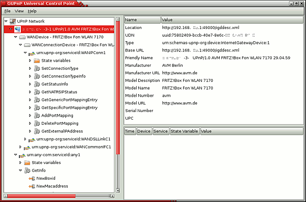
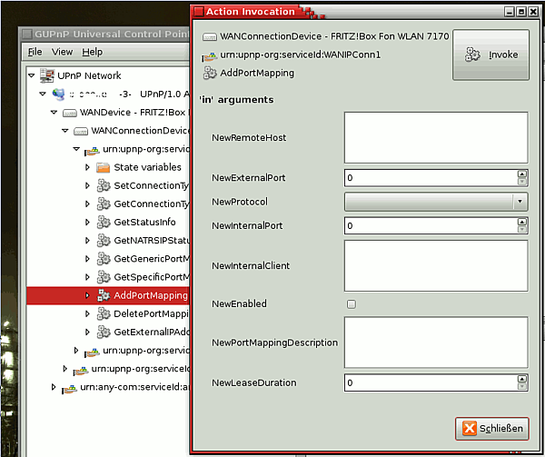

GUPnP Tools
Dieser Artikel wurde für die folgenden Ubuntu-Versionen getestet:
Dieser Artikel ist größtenteils für alle Ubuntu-Versionen gültig.
Zum Verständnis dieses Artikels sind folgende Seiten hilfreich:
gUPnP  ist ein Werkzeug, mit dem man verschiedene Informationen über den Status von UPnP-Geräten in Erfahrung bringen kann. Das Paket bietet einen UPnP-Browser.
ist ein Werkzeug, mit dem man verschiedene Informationen über den Status von UPnP-Geräten in Erfahrung bringen kann. Das Paket bietet einen UPnP-Browser.
UPnP dient zur Ansteuerung von TCP/IP-Netzwerkgeräten. Am bekanntesten dürfte die Anwendung von UPnP in Routern sein. Mit UPnP lassen sich z.B. Portweiterleitungen für einen Messengerclient automatisch und ohne weitere Nutzerinteraktion einrichten. Netzwerkgeräte machen ihren UPnP-Dienst via UDP über die Multicast-Adresse 239.255.255.250:1900, auf Basis des "Simple Service Discovery Protocol" (SSDP) bekannt. Weitergehende UPnP-Anwendungen bestehen in der Steuerung von z.B. Stereoanlagen, Druckern und Haussteuerungen.
Neben UPnP und SSDP gibt es mit Zeroconf: bzw. Avahi eine weitere Lösung, um automatisch Geräte im Netzwerk zu finden. Dies betrifft u.a. manche DLNA-Server. Diese Geräte lassen mit dem Werkzeug Avahi Zeroconf Browser aufspüren.
Installation¶
Folgendes Paket muss installiert [1] werden:
gupnp-tools (universe )
 mit apturl
mit apturl
Paketliste zum Kopieren:
sudo apt-get install gupnp-tools
sudo aptitude install gupnp-tools
Benutzung¶
Achtung!
UPnP sollte sorgsam und nur in internen Netzen genutzt werden. Insbesondere bei Routern, die UPnP anbieten und mit dem Internet verbunden sind, ist zu bedenken, dass sich über UPnP beliebige Ports freischalten bzw. bestehende UPnP-Portweiterleitungen löschen lassen, ohne dass hierzu ein administrativer Zugriff auf den Router notwendig ist.
Der UPnP-Browser kann im Terminal [2] mit dem folgenden Befehl aufgerufen [3] werden:
gupnp-universal-cp
gupnp-universal-cp bedeutet, dass hier ein universeller Kontrollpunkt (universal-control-point) im UPnP-Netzwerk per Software abgebildet wird. Die folgende Abbildung zeigt die GUPnP-Oberfläche. Angezeigt wird ein Router von der Firma AVM.

Auf dem Bildschirmfoto ist im rechten oberen Fenster als erster Eintrag der Schlüssel Location mit dem Wert http://192.168.1.1:49000/igddesc.xml zu erkennen; an diesem Ort liegt die Beschreibung des Geräts. Die Datei igddesc.xml enthält weitere Informationen über die UPnP-Schnittstellen und angebotene Dienste; diese werden im linken Bildabschnitt in der Baumansicht nummeriert.
In der nächsten Abbildung ist im linken Bildteil der Eintrag zum Anlegen einer Portweiterleitung ausgewählt. Hier lässt sich mit der rechten Maustaste  über das Kontextmenü der Befehl "Invoke" auswählen, der einen Dialog öffnet, in dem die weiteren Parameter zum Öffnen eines Ports eingegeben werden können.
über das Kontextmenü der Befehl "Invoke" auswählen, der einen Dialog öffnet, in dem die weiteren Parameter zum Öffnen eines Ports eingegeben werden können.

Der Einsatz von gupnp-universal-cp ist insbesondere in Netzwerken sehr interessant, in denen sich Multimedia-Geräte befinden. Die Portweiterleitung über Router ist eher ein Nebenprodukt von UPnP, wenn auch das wohl am häufigsten genutzte.
Das Paket bringt weiterhin eine virtuelle Glühlampe mit, das gupnp-network-light. Entsprechend ausgestattete UPnP-Geräte, insbesondere Front-End-Clients, können per UPnP Befehle senden, um die Glühlampe ein- oder auszuschalten, bzw. sie zu dimmen.
Außerdem ist der "AV Control Point" im Paket enthalten. Dieses ist ein einfaches Frontend, mit dem sich Multimediainhalte im Netzwerk finden und abspielen lassen sollen.
Weitergehende Möglichkeiten¶
Ein weiterer Anwendungsfall könnte die Kommunikation mit WLAN-Radios oder NAS-Geräten sein, die über UPnP-Funktionalität verfügen. Im optimalen Fall sollten diese Geräte die UPnP-Informationen automatisch austauschen und das NAS-Gerät die abspielbaren Musikstücke (z.B. einem WLAN-Radio) so mitteilen. GUPnP eignet sich auf jeden Fall, um diese Informationen einfach und grafisch aufbereitet auszulesen und ggf. entsprechende Services zu nutzen. Weiterhin lassen sich so natürlich eigene Entwicklungen mit UPnP-Unterstützung sehr gut testen.
Links¶
- Erstellt mit Inyoka
-
 2004 – 2017 ubuntuusers.de • Einige Rechte vorbehalten
2004 – 2017 ubuntuusers.de • Einige Rechte vorbehalten
Lizenz • Kontakt • Datenschutz • Impressum • Serverstatus -
Serverhousing gespendet von